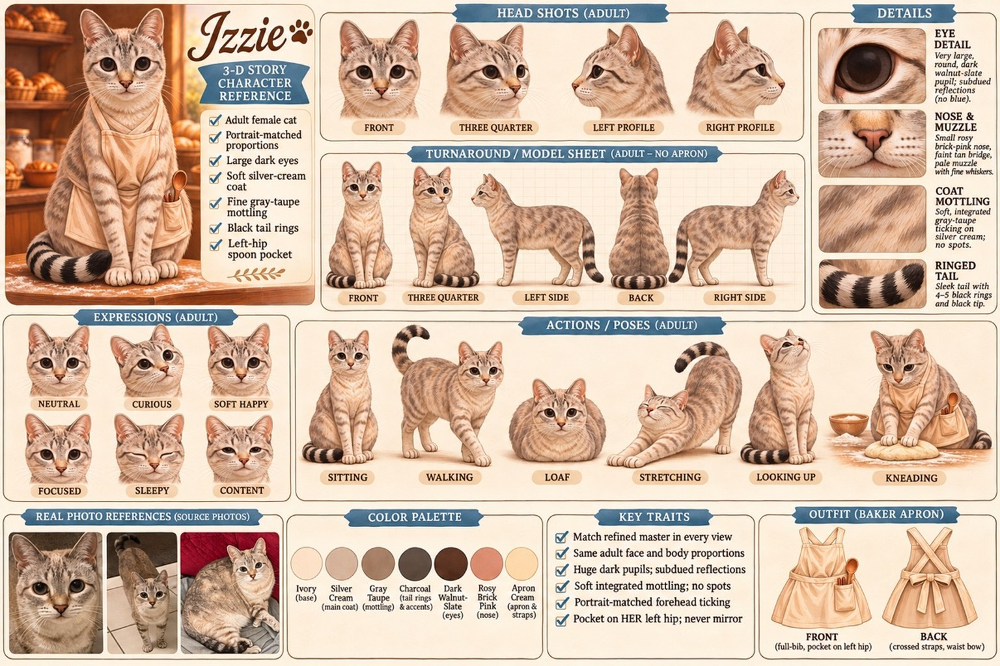

The Character Board
Izzie’s locked look — expressions, poses, proportions and details — on one board, built from the BEST-V4 master portrait above.

The Story
Izzie Doodle runs a beloved little bakery — Izzie’s Biscuits — and works so hard she never takes a day off. She works so much, in fact, that she forgets what day it is… including her own birthday.
When her big sister Frittee arrives with a “top secret mission” — bake for a very important party — Izzie discovers she’s out of every ingredient she needs. So she turns to the friends who love her bakery, collecting sugar, flour, eggs, and more, one neighbor at a time… and discovers the mission was her surprise birthday party all along, with everyone baking together.
Sweet, funny, and very punny — a story about rest, friendship, and letting your community help you.
The Pages — Script Stage
Every page of Jennifer’s draft, carded in order on a Final Pass–style board — the same working view used on Harlow’s Accidental Journey. When production starts, each card gets its picture here.
Every page of the book →16 pages + end cover · all at script stage · tap to open the boardFront & Back Covers
Title Treatment
Meet the Cast
The Real Izzie
The hero of the book is Jennifer’s own cat: a pale lynx-point beauty with vivid blue eyes, soft tabby striping, a cream chest, and a tail that darkens into black rings at the tip. Her look/feel “recipe” — the same character-design method used on Harlow’s Accidental Journey — starts from this photo, so the illustrated Izzie stays unmistakably her.
Production Status
- Story draft received & readDone
- Character recipes (look & feel)In draft
- Script polish passOn deck
- Sample spread for the author’s sign-offOn deck
- Full illustrations, showcase & flipbookOn deck
- Print edition through LuluOn deck
Production begins when Jennifer says she’s ready — no rush, and no timeline but hers.
The Flipbook
A 3-D flipbook edition is planned, on the same viewer built for Harlow’s Accidental Journey. The template copy lives in this repo while Izzie’s own pages are made.
Open the template flipbook